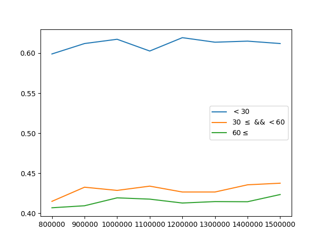

まえがき
第28回世界コンピュータ将棋手権に「broaden」として参加いたしました。
ここでは、参加するまでにやったこと、また今後検証したいことなどを簡単に記述いたします。
やったこと
はじめに、broadenの動作環境を簡単に記述いたします。
- CPU: Ryzen7 1700
- GPU: GTX 1060
- メモリ: DDR4 16GB
次に、探索アルゴリズムなどを記述いたします。
- Alpha Zero風のPUCTを用いたモンテカルロ木探索。定数Cは5。ただし、学習はfloodgateの棋譜5年分を用いた教師あり学習。
- Policyの出力は(移動元) * (移動先) + (持ち駒)としている。
- 探索スレッド数、ミニバッチサイズは共に16。
- Virtual Lossとして、他のスレッドが下りた子は、１スレッドあたり5回負けたとしている。
次に、使用したNeural Networkのモデルについて記述いたします。
- 学習は教師データの棋譜を再生しながら、1/60の確率でその局面を学習データに採用。
- 学習時のミニバッチサイズは1024。
- ネットワーク構成はアピール文章の付録（最終ページ）を参照してください。
- Policyの直前のConvolution層のフィルター枚数は2枚、Valueの直前は1枚。
- その他のConvolution層のフィルター枚数は、すべて256枚。
- Valueの前にある全結合層は256ノード。
- 入力は次のようになっています。
- それぞれの駒に対して、その駒があれば1、なければ0のレイヤー。
- すべての持ち駒の種類と、枚数の組み合わせについて、持っていればすべてが1、持っていなければ0のレイヤー。
例）歩を18枚持つことがありうるので、持ち駒の歩に関しては先手、後手合わせて36レイヤー持つ。
- 先手番ならすべてが1、後手番なら0のレイヤー。
次に、学習iterationとaccuracyのプロットを記載いたします。
なお、accuracyの測定には2chkifuの番号が小さい100局を使用いたしました。

横軸: iteration, 縦軸: accuracy, 凡例: 手数
今後検証したいこと
- 教師棋譜をやねうら110億局面で学習したモデルとの性能比較
- Residual Blockの数による性能比較
- Residual Block内のConvolution層の数による性能比較
- 持ち駒で、ある駒を持っている数をレイヤー数ではなくスカラーとして与える
- Alpha Zero風のPolicyの出力を試す。
おわりに
不足している内容が多々あるかもしれませんので、気付き次第加筆したいと思います。